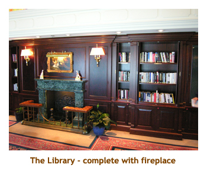
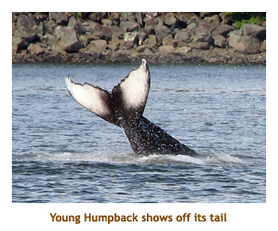
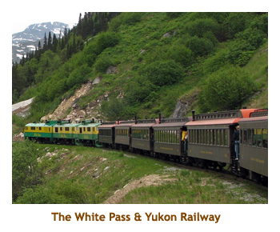
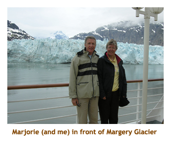
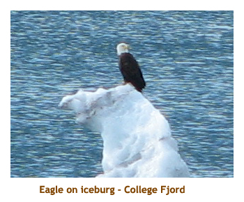
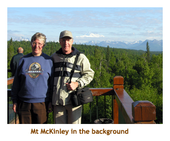
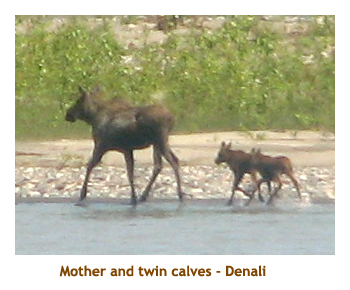
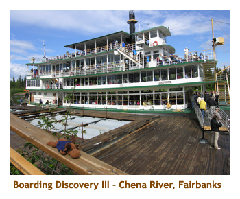
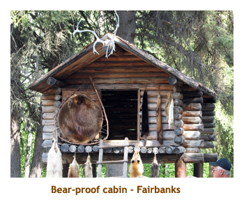

[ Home ] [ Travel ] [ Photography ] [ Pets ] [ Games] [ Rowing] [ Physics ]


Cruising on the Pacific Princess
Travel
Cruises
Past Cruises (Diaries)
Future Cruises
Rogues Galleries
Land Trips
Diaries (Land Trips)
Hawai'i - Big Island - 04'01
Hawai'i - Maui - 05'02
Hawai'i - Big Island - 04'03
Hawai'i - Kaua'i - 09'04
Hawai'i - Big Island - 04'06
Hawai'i - Maui - 04'06
Mainland China - 05'07
Phoenix, Arizona - 12'07
Greek Isles - 05'08
Hawai'i - Kaua'i - 09'08
Hawai'i - Big Island - 09'09
Hawai'i - Maui - 05'12
Hawai'i - Big Island - 04'13
Ireland - 08'13
Mexico - Cancun 11'13
France/Belgium/Lux 07'15
Hawai'i - Big Island - 05'17
England / Wales - 06'17
Hawai'i - Big Island - 09'19
Photography
Cameras
Underwater
Pets
Tara
Blackie
Whitey
Muffy
Ollie
Rusty
Fluffy
Rufus&Dufus
Games
Rowing
Physics
Rating (out of 5):
Ship  Food
Food  Service
Itinerary
Service
Itinerary
This was our third trip to Alaska. We were trying two new things this time. Firstly, we were going on a "small" ship - the Pacific Princess (680 passengers). We had heard so much about the small ship experience that we had to try it. Secondly, we were adding on a 3 day land tour to Fairbanks. We had never been into the heart of Alaska before. If we could just get nice weather, it was bound to be a wonderful trip.
One note in retrospect. The cruise line offered land tours of 3, 4, 5 and 6 days, doing the same itinerary. The extra days meant staying more than 1 night in one or more of the locations. Because we did the 3 day, we were on the move the whole time. Having those extra days to really see each area would have made a big difference. If you can afford the time and price, take the longer land tour.
Day 1 (Jun 6) - Boarding in Vancouver
We booked our air travel through Princess. This time Princess was smart and flew us directly YYC to YVR. Our first trip they had flown us to Seattle and then bused us to Vancouver. Mike drove us to the airport. The Deerfoot was totally stopped so we went 52nd street. We got to the airport quite early as Mike had to be in to work on time. We left Calgary about 10 AM, arrived in Vancouver about 10:15 and cabbed it to the cruise terminal. We got to the terminal about 12 noon and the boarding hadn't begun. We decided to walk a few blocks to the IGA and get a case of Coke for the trip. It was overcast and cool, but the walk warmed us up. When we returned to Canada Place, about 1 PM, the ship had started boarding.
We immediately went to our cabin to check it out. It was a standard balcony cabin with lots of storage space and a nice balcony. Our luggage came in pieces - Marj's came quite quickly but mine arrived just before dinner. Sail-away was early - about 4:30. It was pleasant cruising out through English Bay. It was cool, but very interesting.
As usual, the onboard spa held a draw for various treatments. And, as usual, Marj was very lucky.
She won a lime and ginger body rub. I also won a scalp and shoulder massage (actually Marj had her
name on my ticket too!). We booked our treatments
for the "Juneau" day as we weren't docking until 1:30 PM.
At dinner we met our dinner mates at a table for 8. We were fortunate in all being compatible and we had a great
time throughout the cruise.
Day 2 (Jun 7) - Cruising the Inside Passage
 Our day at sea was great. It was mixed sun and cloud, warm and the seas were calm. We spent some of the day exploring the ship.
The ship was nice, but didn't live up to all the hype. There were some very nice areas. For example, the library was huge, with a large number of books. It was beautifully decorated and included a fireplace. Our biggest disappointent on board was the decor. We had read so much about the woodwork and beautiful finishing. We found it very plain, lacking in any "wow". The woodwork didn't come close to the Schooner Bar on the Radiance class. The stairwells were lacklustre. The buffet area had a single line for serving food, so you had to remember where different items were located. Seating was at a premium. Dessert selection was meagre. We compensated for the lack of desserts by going down to the formal lunch dining just for dessert. The formal dining room was a single level. No open area or balconies. Personal Choice dining is not available on the smaller ships. Finally, the "theatre" was a huge disappointment. It is just a one story lounge with no sloped seating. If you didn't get a front row seat, you were looking through heads. To be fair, I guess we are big ship people.
Tonight was formal night. One couple at our table didn't show up and we assumed that weren't comfortable
dressing up. This turned out to be correct as they also skipped the second formal night. other than this,
we always had a full table.
Day 3 (Jun 8) - Ketchikan, Alaska
 On Day 3, we awoke to blue skies and sunshine. We were just pulling in to Ketchikan. I had booked a
sea plane flight through the Misty Fjords. Marj didn't wish to join me, so she spent the morning
wandering around the town. My flight wasn't until 8:30, so I had some time to wander around with Marj. It was
a beautiful morning.
On Day 3, we awoke to blue skies and sunshine. We were just pulling in to Ketchikan. I had booked a
sea plane flight through the Misty Fjords. Marj didn't wish to join me, so she spent the morning
wandering around the town. My flight wasn't until 8:30, so I had some time to wander around with Marj. It was
a beautiful morning.
It was only a short ride to the sea plane dock. The company, Taquan Air, had several 6 seater planes (including the pilot). I was with 2 other couples, so, being single, I got the co-pilot chair. It was great because I had a view forward as well as to the side. The filight was awesome. We headed up a fjord and then over the mountains. Some of the lakes were thawed and the forest green, others were frozen and surrounded with snow. We landed on a large lake and had some peaceful moments standing out on the pontoons. Then it was back into the air and we returned to the dock area. We were gone for about 1 1/2 hours. It was a great flight.
After lunch, we took in the town from the upper deck of the ship. We were leaving at 2 PM, so no time to go ashore again.
Leaving Ketchikan was gorgeous. There were other cruise ships in the harbour and lots of sea planes coming and going.
Day 4 (Jun 9) - Juneau, Alaska
 Another sunny day! In the morning, the ship cruised slowly up Tracy Arm. We hadn't been there before. It was beautiful. Lots of small ice chunks in the water. Being a small ship we were able to go quite far up the arm before having to turn around and come out again. The trip took most of the morning as we were travelling very slowly - almost as though we were just floating along. This was also the morning that we cashed in our spa winnings. We were both booked for 9:15 (different treatments) while we sailed up the arm. I had my massage in a chair right against a starboard side window, so I had an excellent view of the scenery as I was pampered. The girl that did the massage was from Romania.
We arrived at Juneau about 1:30. It was hot!. It felt like 25 or so. We had booked a whale watching trip
for mid-afternoon (with Captain Larry). This gave us time
to do some souvenir shopping before the excursion. We bought some light jackets, toques and t-shirts.
Then we were bused a short distance to the boat dock. The boat held about 40 people, but I think there were only
20 or so on our trip. We spotted a mother and calf (Humpback) just out from the dock, so spent a while watching
them. Then we headed out into the ocean and spotted a number of other mother/calf duos. It was a great trip.
We got back to the ship rather late so skipped the formal dining and went to the buffet instead. As usual, we popped
down to the formal dining room for dessert.
Day 5 (Jun 10) - Skagway, Alaska
 We docked in Skagway about 7 AM. It was quite overcast (high cloud) and looked like it might rain later. We were booked for the 8 AM trip on the White Pass and Yukon Railway.The train pulled up right beside the cruise ship and we all got on. The rail cars were from the late 1800's, but were quite comfortable with large windows. We went a short distance to the train station to pick up some independent travellers (not cruisers). Then we headed off for White Pass, on the border of Alaska and British Columbia.The clouds remained high up, so even though it wasn't sunny, we got some great views as we travelled along the mountain slopes to the pass. We stopped at the pass and the engine uncoupled and passed us on a small siding and recoupled at the "back" of the train. The backs of the padded bench seats flipped over and we were facing the other way. We were ready to head back! We arrived back at the ship about 12:30 for lunch. It had been a wonderful trip.
After lunch we headed into town to window shop. By this time the clouds had come down quite low and it was
raining lightly. There was an afternoon group doing the same WP & YR trip and we felt sorry for them. The mountains
were shrouded in clouds and they wouldn't get much of a view at all. The town
of Skagway is very small, just two main streets for
shopping. I think there is only about 1,000 people that live here year-round. We popped in and out of some
souvenir and art shops, and even visited the railway station store. Back onboard,
we set sail at 6:00 PM heading for Glacier
Bay. We were going very slowly as it wasn't far to travel and we had all night to get there.
Day 6 (Jun 11) - Cruising Glacier Bay
 Today was spent cruising the reaches of Glacier Bay. It was cool and overcast all day. We arrived at the park about 6 AM . A small boat came out to meet the ship and several National Park people came on board. (Glacier Bay is a national park). The previous time we were here it had been a sunny, blue sky day. We had been told that the glaciers actually looked better (ie. bluer) when it was cloudy. I think they're right as the blue coloring of the ice really showed up. There wasn't much calving activity on the large glacier, at least while we were out on deck. There was a cold wind coming off the glacier and we got to try out our new toques.
It was quite crowded up on deck, so, when we were facing the right way, we used our balcony. Our room was lower down (deck 6), so it was a lower view, but unobstructed. Apart from viewing the glaciers, we did some reading and wandered the ship. We always enjoy the promenade deck level as it is much less crowded than the upper decks. We especially like the promenade decks that completely wrap around the ship where you can do "laps". We also like to hang out over the aft and watch the wake. Not many ships have such a deck. The Pacific Princess was no exception and had neither aft nor bow access. The promenade only ran the length of either side. The crew was often working on the deck, so sometimes one side or the other was closed.
Day 7 (Jun 12) - Cruising College Fjord
 Today was spent cruising the open waters to College Fjord. It is quite a way from Glacier Bay, so we didn't arrive at the fjord until 7 PM. It was a beautiful day, quite warm, with blue sky and white puffy clouds. As we pulled into the fjord, a lot of the surrounding mountains were capped with clouds. The sun was getting low in the sky, so the lighting was quite interesting. There are several large glaciers flowing down to the fjord. We saw a number of sea otters and some eagles.
Being the last night of the cruise, we had to put our suitcases out in the hall for pickup. We were given 2 different tags that said "Travel with me" or "Join me in Fairbanks". The "Travel with me" bags would be delivered to each hotel/lodge along the way while the "Join me in Fairbanks" bags would be stored until we reached Fairbanks. So, we put our formal clothes and other items we didn't need into one bag and marked it for Fairbanks.
Earlier in the day we wandered around the ship and spent some time reading and just lounging around.
The fitness center was small, but not heavily used. I was always able to get a bike each day. Sometimes I
was the only one in there. The games room was small (maybe 6 tables) but had a well stocked cabinet full
of many different games. We only went to the "theatre" a couple of times. The shows weren't all that great
and the seating was very poor. The casino area was tiny (not a problem as we never use it). The shopping deck
was bustling with t-shirt sales and an inch-of-gold station. They were selling off some t-shirts from various
exotic cruises such as Durban, Nagasaki and Pusan (Korea). There were many more cities represented,
but these were the three we bought for $3 apiece. I also bought a Ketchikan t-shirt.
Day 8 (Jun 13) - Whittier to Talkeetna
 Today was our transfer from sea to land. Whittier is only a short distance from College Fjord, so we were there and docked when we awoke. It was a lovely sunny, warm day. Whittier is a very small town, with a docking area for the fishing fleet. Beside the ship was the train we would take to Talkeetna. All 5 of the passenger cars were Princess. We had an early breakfast and then left the ship and boarded the train (7:15 AM departure). The train cars were wonderful. They were single level, but had windows that wrapped overhead giving us a wonderful view. We were given seat assignments, and all of the seats had a great view.
We left Whittier travelling through the 2 huge tunnels (one was 2 km long). As we neared Anchorage, 2 large moose appeared running down the highway beside us. We passed through the center of Anchorage and then headed northeast towards Talkeetna. They served lunch on the train - sandwiches and such. We arrived in Talkeetna at 12:45 PM. Here we were to board a shuttle bus for the 1 hour drive to Mt McKinley Lodge. However, because there were hourly shuttles between the town and the lodge, we decided to spend an hour walking through the town and take the following shuttle to the lodge. We really enjoyed walking through the town. It was 100% a tourist trap, but the shops and decorations were very unique. Lots of wooden moose of every description.
We arrived at the lodge about 4 PM and found our bags waiting for us in our room. The lodge is
huge, with many outbuildings housing the rooms. There is a wonderful view overlooking Mt McKinley.
I found a small fitness center and did a bike workout. We decided to have an early dinner (fish and chips).
Day 9 (Jun 14) - Talkeetna to Denali
 We were up early and headed to the cafe for breakfast. Bags had to be out by 7:30 for pickup. Our shuttle back to Talkeetna wasn't until 9:30, so we had some time to wander around. It was a beautiful sunny day, so we decided to do the short nature trail in front of the lodge. The longer nature trail at the back was closed due to the presence of a moose and her calf. The trail was very interesting with lots of different flowers and flowering shrubs. The bus picked us up at 9:30 and took us back to the train station at Talkeetna. This was a different train than yesterday. There were several Princess cars and several HAL cars, as well as some Alaska RR cars. They were all double decker cars, with restaurants, shops and public ares on the lower level, and passenger seating on the upper level. Once again the viewing window wrapped above our heads.
The train left at 11:30. It was about 4 hours or so to our next stop in Denali National Park. This time we
had a short bus ride to the lodge. We arrived at the lodge just after 4 and had a 5 PM bus excursion
into the park. We grabbed a quick bite to eat and headed off for the evening. Our first stop was a walk
through a wilderness area to a trapper's cabin. A fellow in period dress told us what it was like in those days.
We also entered a small theatre and were shown a movie about the early days of the park and the efforts
to make it a national park. Then we stopped a bit later to watch a moose feeding on some bushes
(willow, I think). We saw other moose
as we were driving along. Our final stop was at a senic spot where a native Athabascan Indian talked to
us about the life and problems of indians in Alaska today. We got back to the lodge about 9:30 and
went to bed soon after.
Day 10 (Jun 15) - Denali to Fairbanks
 We had to be up early again for our departure to Fairbanks. Today we were travelling by bus rather than train. Our bus left at 8 AM, so we hustled to the cafe for an early breakfast. I had pancakes and Marj had oatmeal. The bus trip was about 3 hours. It was cloudy but very scenic along the way. We pulled into Fairbanks in time for lunch and a quick walk around downtown. It started to pour in rain just as we arrived. We had lunch at an Italian restaurant. I had pizza and Marj had lasagna. It was very good.
After lunch we were picked up by the bus and taken to the paddlewheel dock. We were going to do a round trip along the Chena River. The weather had cleared and it was sunny again. The paddlewheeler was huge, I think it had 4 decks. We headed to the top deck for the best view. There were some beautiful homes along the banks of the river. Our first stop was to watch a small float plane take off and land again alongside the boat. Then we toured further down the river to the home of Susan Butcher, the 4 time Iditarod champion. She died a year ago from cancer, but her husband and children continue to look after 70 or 80 dogs. They gave us a demo of 8 dogs pulling a 4x4 motor bike. Then we continued down to a mockup of a traditional Athabascan Indian village. We got off the boat and walked around the large park and stopping for talks at several points - a fishing camp, a hunting camp, a sled dog facility and a crafts display. Very interesting!
On the way back it started to pour in rain. We had to move from our "open air" seats to under cover. The
rain didn't last long and we had a nice trip back to the paddle wheeler docking area.
Then we were bused to the Princess hotel.
It was another very nice hotel. We had dinner in the restaurant (can't remember what we had, but it was good).
We walked around the hotel grounds and then went to bed early. We had a 5 AM pickup for the airport tomorrow.
Day 11 (Jun 16) - Fairbanks to Calgary
 Our departure time came very early. I think we had a wakeup call for 4:30 AM. We skipped breakfast and were going to depend on some chewy bars.
We bused to the airport with the other groggy passengers. I broke down and visited the coffee shop for some hot chocolate and a muffin. The plane was delayed leaving a bit, but that was OK. We flew Alaska Airlines from Fairbanks to Seattle and had a short layover there. Then we flew Horizin Air from Seattle to Calgary. Both flights were smooth and uneventful.
Chrissy and Matt were there to pick us up. We had had a wonderful cruise and tour through the interior of Alaska, but were glad to be home again.